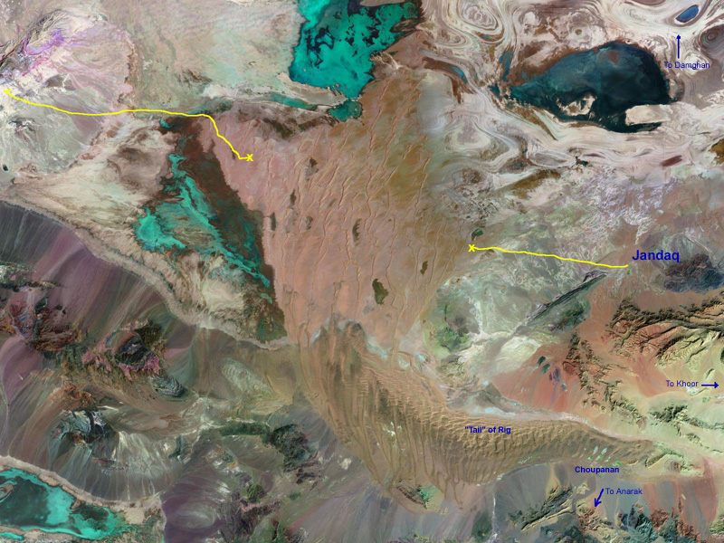

Rig-e Jenn from Space
This picture shows part of Dasht-e Kavir, or the central desert of Iran, with Rig-e Jenn in the center. The image is from NASA's Mr. Sid site. The site was kindly refered to me by Mr. Albert Groebli of Pacific Grove, California. He believes that the Biblical Noah's Ark has landed somewhere in the central Iran. He has done extensive research on the geology of the area, and at one point he was of the opinion that the Ark landed right in our Rig-e Jenn.
I have taken the liberty of annotating this image. The yellow lines show our route in our second (left) and fourth trip to the area.
